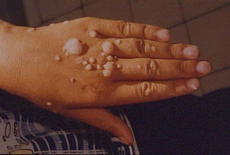

पापिलोमा और मस्से अब पुरानी बात हो गए हैं!
वर्ष 2018 में नए प्रोडक्ट के क्लीनिकल ट्रायल
प्राइवेट इंस्टीट्यूट ऑफ हैल्थ में पूरे हुए। ये कैप्सूल पापिलोमा और मस्सों के इलाज के लिए
बनाए गए हैं। इंस्टीट्यूट के प्रेस सेंटर ने निम्नलिखित वक्तव्य प्रकाशित किया:
- नाम के प्रोडक्ट का असर मानक प्रणाली से आँका गया था (100 लोगों के
एक समूह में इलाज से ठीक हो जाने वाले लोगों और कुल इलाज करवाने वालों का प्रतिशत)
और इसने दर्शाया:
- पापिलोमा के इलाज में 99% प्रभावशीलता
- मस्सों के इलाज में 100% प्रभाशीलता
* इलाज का अर्थ है पापिलोमा, मस्सों का उन्मूलन और अगले 6 महीनों में पुनः वापस नहीं आना। - इसके कोई साइड-इफ़ेक्ट नहीं देखे गए हैं और न ही कोई एलर्जिक रिएक्शन देखने में आए हैं
- को एचपीवी (ह्यूमन पापिलोमावायरस) के इलाज के लिए सबसे असरदार प्रोडक्ट माना जाता है।
शोधकर्ताओं की टिप्पणियाँ:
दिलीप रस्तोगी
डॉक्टर, प्रोफेसर, डेप्युटी मेडिकल डॉक्टर ऑफ
रिहैबिलिटेशन ट्रीटमेंट।
प्रोफेशनल अनुभव: 28 वर्ष
यदि पापिलोमा को दूर न किया जाए तो यह बीमारी बढ़ती जाती है जिससे पूरे शरीर में और यहाँ तक कि म्यूकस झिल्लियों में भी दाग उभरने लगते हैं।
92% मामलों में पापिलोमा खोपड़ी और जननांगों के आस-पास की जगहों जैसे लिंग, योनि, सर्विक्स और गुदाद्वार को प्रभावित करते हैं। ऐसे में पापिलोमा गुप्तांगी मस्से या जेनिटल वार्ट बन जाते हैं।
पापिलोमा की वृद्धि का उदाहरण
उदाहरण 2: पापिलोमा की बढ़त बिना इलाज के नहीं रोकी जा सकती!
इस विषय के बारे में:
कुछ आंकड़े: भारत में 10 में से 7 लोग एचपीवी (ह्यूमन पापिलोमावायरस) से संक्रमित हैं और इनकी गंभीरता अलग-अलग हो सकती है। एचपीवी शरीर में बना रहता है और इसके लक्षण तब तक सामने नहीं आते जब तक शरीर की रोग-प्रतिरोधक क्षमता इससे लड़ कर कमजोर नहीं पड़ जाती। ऐसे में वायरस मस्से बनाकर शरीर को बहुत नुकसान पहुंचा देता है और सुखी जीवन जीना दूभर हो जाता है। शरीर में एचपीवी के पहले लक्षण होते हैं वेरूगा और पापिलोमा। लेकिन पहले महत्वपूर्ण चीजें बताते हैं।
पापिलोमा और मस्से शरीर के लिए बड़े हानिकारक होते हैं। वायरस सबसे पहले शरीर की रोगों से लड़ने की प्रणाली पर हमला करता है। रोग प्रतिरोधक क्षमता कमजोर पड़ जाने से शरीर पर मस्से उभरने लगते हैं और वायरस और सक्रिय रूप से बढ़ते जाते हैं। इससे भविष्य में शरीर पूरी तरह मस्सों से ढँक भी सकता है। बदल चुकी एपीथेलियल कोशिकाएँ केवल मस्से नहीं होतीं। ये एक तरह का ट्यूमर होती हैं जिसे हटाया न जाए तो यह त्वचा पर बढ़ता जाता है।
शोधकर्ताओं ने एचपीवी के 100 से भी ज़्यादा प्रकार पहचाने हैं। कुछ प्रकार के गुप्तांगी मस्से, खासकर एचपीवी सब-टाइप 16,18 और 31 से सर्वाइकल कैंसर भी हो सकता है। कैंसर होने का एक और कारण होता है इस बीमारी के कोई लक्षण न होना जिसके कारण व्यक्ति लंबे समय तक इलाज ही नहीं करवाता !
यहाँ आपको बीमारी की विभिन्न अवस्थाओं की कुछ फोटो दिख रही हैं जो हमारे इंस्टीट्यूट के विशेषज्ञों ने ली हैं:
पापिलोमा जलन करें वाले जख्म पैदा करता है।
हाथों में पहले मस्से 4 साल पहले आए थी और उन्हें छूने पर खून निकलने लगता था। इससे मस्से और बढ़ गए।
शुरुआत में केवल दो छोटे पापिलोमा उभरे थे, जिन्हें मरीज ने धागों से बांध दिया था।
क्या आप खुद को इन मस्सों से बचा सकते हैं?
पापिलोमा और मस्सों का इलाज असरदार और आधुनिक उत्पादों से करना चाहिए और बीमारी को कभी भी अनदेखा नहीं करना चाहिए। इस समय, को पापिलोमा और मस्से ठीक करने के लिए सबसे बढ़िया और किफ़ायती प्रोडक्ट माना जाता है ।
मनीष गिरि
डॉक्टर, प्रोफेसर, डेप्युटी मेडिकल डॉक्टर ऑफ
रिहैबिलिटेशन ट्रीटमेंट।
डॉक्टर, प्राइवेट इंस्टीट्यूट ऑफ हैल्थ में विज्ञान
विशेषज्ञ। प्रोफेशनल अनुभव: 33 साल
हमारे इंस्टीट्यूट के विशेषज्ञों ने खुलासा किया है कि एचपीवी के सक्रिय रूप से बढ़ने के पीछे मुख्य कारण है शरीर में हानिकारक परजीवी बैक्टीरिया का संक्रमण। मस्से इसीलिए उत्पन्न होते हैं। बैक्टीरिया और उनके विषैले स्त्राव वायरसों के बढ़ने में मदद करते हैं और वायरल संक्रमण ज़्यादा होते हैं।
नाम के अनोखे प्रोडक्ट का तीन तरह से असर होता है:
- परजीवी बैक्टीरिया नष्ट कर देता है;
- रोग प्रतिरोधी क्षमता को मजबूत करके एचपीवी को दबा देता है, जिससे स्वास्थ्य बेहतर होता है और ऊर्जा स्तर बढ़ जाता है;
- शरीर से विषैले पदार्थ बाहर करता है।
दवाई से इलाज से त्वचा के पापिलोमा और मस्से पूरी तरह चले जाते हैं जो इस इलाज की प्रभावशीलता दर्शाता है। सौ सौ लोगों के दो समूहों (पहले समूह में ऐसे लोग थे जिन्हें शरीर में कई जगह मस्से थे, और दूसरे समूह में ऐसे लोग थे जिन्हें पापिलोमा थे) ने रोज आधे ग्लास पानी के साथ कैप्सूल लिए।
जितने लोगों ने परीक्षण में हिस्सा लिया था, सभी ने अपनी सामान्य अवस्था में लगभग तुरंत बेहतरी महसूस की। चार या पाँच दिनों के बाद उनके मस्से और पापिलोमा "सूख" गए थे। टेस्ट खत्म होने पर लगभग पूरे मस्से और पापिलोमा चले गए थे। मैं यह भी बताना चाहूँगा कि मस्सों और पापिलोमा के साथ ही टेस्ट में भाग लेने वाले लोगों के मुँहासे भी चले गए थे, जो भी बीमारी उत्पन्न करने वाले परजीवी संक्रमण के कारण ही उत्पन्न होते हैं।
फिलहाल, आरिजिनल ट्रीटमेंट को उत्पादक की ऑफिशियल वेबसाइट से ऑर्डर किया जा सकता है ।
मुझे वेब पेज का एड्रेस ही नहीं मिल रहा था। लेकिन फिर मैंने
किसी तरह याद किया और अब अपने नतीजे शेयर करते हुए बड़ी खुशी हो रही है! ये एक जादू से कम
नहीं है! मेरे नतीजे: 3 बॉटल, 2 हफ्ते, और मुझे लगता है मैं पूरी नई हो गई हूँ। अब मुझे
तकलीफ नहीं होती और मैंने अपना आत्म-विश्वास भी वापस पा लिया है!
धन्यवाद
.
मैंने अभी-अभी ऑर्डर दिया है।
अभी 50% छूट चल रही है,
जल्दी करें! मैंने इसे ऑफिशियल वेबसाइट से खरीदा। उन्होने मुझे बड़ी जल्दी
कॉल करके मेरा ऑर्डर कन्फ़र्म कर दिया। मैं सुंदर दिखना चाहती हूँ। ;)
मैंने कुछ दिनों पहले टीवी पर एक प्रोग्राम देखा जहां . पर चर्चा हो रही थी। कई डॉक्टर इसकी सलाह दे रहे थे। मैंने इसे लिया और इसके नतीजों से बेहद खुश हूँ। लेख के लिए बहुत-बहुत धन्यवाद!
इससे मेरे पति को बहुत फायदा हुआ! पूरे पापिलोमा चले गए! 3 बॉटल में काम हो गया। अब मैंने अपने लिए ऑर्डर कर रही हूँ! ये बहुत बढ़िया है।
बढ़िया! मुझे पूछना चाहिए क्योंकि ये मस्से बड़े खराब होते हैं। मैं एक औरत हूँ और हमेशा सुंदर दिखना चाहती हूँ!

मैंने ऑर्डर दे दिया है, बड़ा आसान है। मुझे सात दिन बाद डाक से मिली और मैंने अपने शरीर से जहर बाहर निकालना शुरू कर दिया। मैंने आपको अपने नतीजों के बारे में बताऊँगी :) थैंक्स! मैं लखनऊ में रहती हों और डेलीवरी बड़ी जल्दी हो गई।